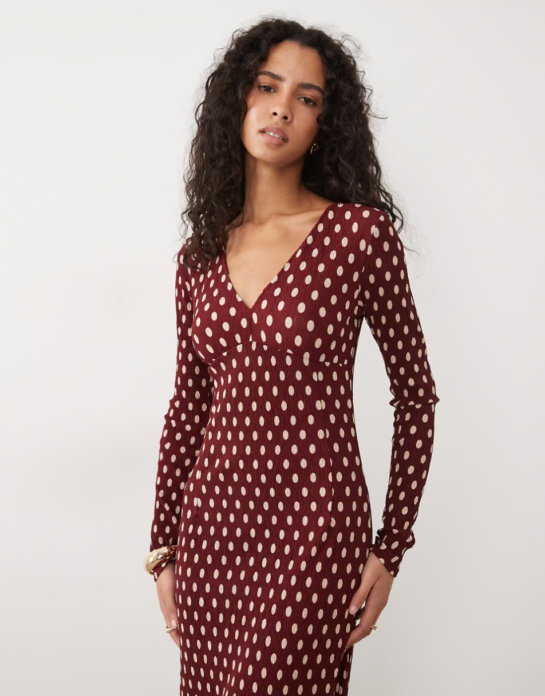

Knee length dress
849 kr
Hverdagskjole - bomuld
Farve: brun
Produktbeskrivelse
Mød din nye hverdagsfavorit. Sofie-kjolen kombinerer ubesværet elegance med ultimativ komfort, hvilket gør den perfekt til både kontoret og en afslappet weekendtur. Kjolen er designet i et klassisk slå-om-snit, der fremhæver taljen på smukkeste vis og giver en fleksibel pasform. Det bløde og åndbare materiale falder tungt og flot mod kroppen uden at krølle, så du kan føle dig skarp hele dagen. Style den med dine yndlingssneakers til hverdag, eller pift den op med et par korte støvler og en læderjakke til fyraftenshyggen.
Detaljer og pasform
Pasform: Normal i størrelsen (regulær pasform med justerbart bindebånd)
Længde: Går til lige under knæet (Midi-længde)
Detaljer: V-udskæring og lange ærmer med elastikmanchett